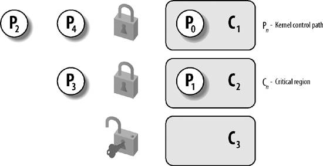
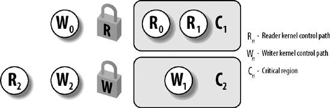

{% include JB/setup %}
{% raw %}
<div>


<a name="understandlk-CHP-5-SECT-2"></a>
<h3 class="docSection1Title">5.2. Synchronization Primitives</h3><a name="IDX-CHP-5-1418"></a>
<p class="docText1">We now examine how kernel control paths can be interleaved while avoiding race conditions among shared data. <a class="pcalibre5 docLink pcalibre1" href="#understandlk-CHP-5-TABLE-2">Table 5-2</a> lists the synchronization techniques used by the Linux kernel. The "Scope" column indicates whether the synchronization technique applies to all CPUs in the system or to a single CPU. For instance, local interrupt disabling applies to just one CPU (other CPUs in the system are not affected); conversely, an atomic operation affects all CPUs in the system (atomic operations on several CPUs cannot interleave while accessing the same data structure).</p>
<a name="understandlk-CHP-5-TABLE-2"></a><p class="calibre14"><table cellspacing="0" frame="hsides" rules="all" cellpadding="4" width="100%" class="calibre15"><caption class="calibre33"><h5 class="docFigureTitle">Table 5-2. Various types of synchronization techniques used by the kernel</h5></caption><colgroup class="calibre16"><col class="calibre17"/><col class="calibre17"/><col class="calibre17"/></colgroup><thead class="calibre18"><tr class="calibre34"><th class="thead" scope="col"><p class="docText1"><span class="calibre5">Technique</span></p></th><th class="thead" scope="col"><p class="docText1"><span class="calibre5">Description</span></p></th><th class="thead" scope="col"><p class="docText1"><span class="calibre5">Scope</span></p></th></tr></thead><tr class="calibre2"><td class="docTableCell"><p class="docText2">Per-CPU variables</p></td><td class="docTableCell"><p class="docText2">Duplicate a data structure among the CPUs</p></td><td class="docTableCell"><p class="docText2">All CPUs</p></td></tr><tr class="calibre2"><td class="docTableCell"><p class="docText2">Atomic operation</p></td><td class="docTableCell"><p class="docText2">Atomic read-modify-write instruction to a counter</p></td><td class="docTableCell"><p class="docText2">All CPUs</p></td></tr><tr class="calibre2"><td class="docTableCell"><p class="docText2">Memory barrier</p></td><td class="docTableCell"><p class="docText2">Avoid instruction reordering</p></td><td class="docTableCell"><p class="docText2">Local CPU or All CPUs</p></td></tr><tr class="calibre2"><td class="docTableCell"><p class="docText2">Spin lock</p></td><td class="docTableCell"><p class="docText2">Lock with busy wait</p></td><td class="docTableCell"><p class="docText2">All CPUs</p></td></tr><tr class="calibre2"><td class="docTableCell"><p class="docText2">Semaphore</p></td><td class="docTableCell"><p class="docText2">Lock with blocking wait (sleep)</p></td><td class="docTableCell"><p class="docText2">All CPUs</p></td></tr><tr class="calibre2"><td class="docTableCell"><p class="docText2">Seqlocks</p></td><td class="docTableCell"><p class="docText2">Lock based on an access counter</p></td><td class="docTableCell"><p class="docText2">All CPUs</p></td></tr><tr class="calibre2"><td class="docTableCell"><p class="docText2">Local interrupt disabling</p></td><td class="docTableCell"><p class="docText2">Forbid interrupt handling on a single CPU</p></td><td class="docTableCell"><p class="docText2">Local CPU</p></td></tr><tr class="calibre2"><td class="docTableCell"><p class="docText2">Local softirq disabling</p></td><td class="docTableCell"><p class="docText2">Forbid deferrable function handling on a single CPU</p></td><td class="docTableCell"><p class="docText2">Local CPU</p></td></tr><tr class="calibre2"><td class="docTableCell"><p class="docText2">Read-copy-update (RCU)</p></td><td class="docTableCell"><p class="docText2">Lock-free access to shared data structures through pointers</p></td><td class="docTableCell"><p class="docText2">All CPUs</p></td></tr></table></p><br class="calibre7"/>
<p class="docText1">Let's now briefly discuss each synchronization technique. In the later section "<a class="pcalibre5 docLink pcalibre1" href="understandlk-CHP-5-SECT-3.html#understandlk-CHP-5-SECT-3">Synchronizing Accesses to Kernel Data Structures</a>," we show how these synchronization techniques can be combined to effectively protect kernel data structures.</p>
<a name="understandlk-CHP-5-SECT-2.1"></a>
<h4 class="docSection2Title">5.2.1. Per-CPU Variables</h4>
<p class="docText1">The best synchronization technique consists in designing the kernel so as to avoid the need for synchronization in the first place. As we'll see, in fact, every explicit synchronization primitive has a significant performance cost.</p>
<p class="docText1">The simplest and most efficient synchronization technique consists of declaring kernel variables as <span class="docEmphasis">per-CPU variables</span><a name="IDX-CHP-5-1419"></a> 
. Basically, a per-CPU variable is an array of data structures, one element per each CPU in the system.</p>
<p class="docText1">A CPU should not access the elements of the array corresponding to the other CPUs; on the other hand, it can freely read and modify its own element without fear of race conditions, because it is the only CPU entitled to do so. This also means, however, that the per-CPU variables can be used only in particular casesbasically, when it makes sense to logically split the data across the CPUs of the system.</p>
<p class="docText1">The elements of the per-CPU array are aligned in main memory so that each data structure falls on a different line of the hardware cache (see the section "<a class="pcalibre5 docLink pcalibre1" href="understandlk-CHP-2-SECT-4.html#understandlk-CHP-2-SECT-4.7">Hardware Cache</a>" in <a class="pcalibre5 docLink pcalibre1" href="understandlk-CHP-2.html#understandlk-CHP-2">Chapter 2</a>). Therefore, concurrent accesses to the per-CPU array do not result in cache line snooping and invalidation, which are costly operations in terms of system performance.</p>
<p class="docText1">While per-CPU variables provide protection against concurrent accesses from several CPUs, they do not provide protection against accesses from asynchronous functions (interrupt handlers and deferrable functions). In these cases, additional synchronization primitives are required.</p>
<p class="docText1">Furthermore, per-CPU variables are prone to race conditions caused by kernel preemption<a name="IDX-CHP-5-1420"></a> 
, both in uniprocessor and multiprocessor systems. As a general rule, a kernel control path should access a per-CPU variable with kernel preemption disabled. Just consider, for instance, what would happen if a kernel control path gets the address of its local copy of a per-CPU variable, and then it is preempted and moved to another CPU: the address still refers to the element of the previous CPU.</p>
<p class="docText1"><a class="pcalibre5 docLink pcalibre1" href="#understandlk-CHP-5-TABLE-3">Table 5-3</a> lists the main functions and macros offered by the kernel to use per-CPU variables.</p>
<a name="understandlk-CHP-5-TABLE-3"></a><p class="calibre14"><table cellspacing="0" frame="hsides" rules="all" cellpadding="4" width="100%" class="calibre15"><caption class="calibre33"><h5 class="docFigureTitle">Table 5-3. Functions and macros for the per-CPU variables</h5></caption><colgroup class="calibre16"><col class="calibre17"/><col class="calibre17"/></colgroup><thead class="calibre18"><tr class="calibre34"><th class="thead" scope="col"><p class="docText1"><span class="calibre5">Macro or function name</span></p></th><th class="thead" scope="col"><p class="docText1"><span class="calibre5">Description</span></p></th></tr></thead><tr class="calibre2"><td class="docTableCell"><p class="docText2"><tt class="calibre25">DEFINE_PER_CPU(type, name)</tt></p></td><td class="docTableCell" valign="top"><p class="docText2">Statically allocates a per-CPU array called <tt class="calibre25">name</tt> of <tt class="calibre25">type</tt> data structures</p></td></tr><tr class="calibre2"><td class="docTableCell"><p class="docText2"><tt class="calibre25">per_cpu(name, cpu)</tt></p></td><td class="docTableCell"><p class="docText2">Selects the element for CPU <tt class="calibre25">cpu</tt> of the per-CPU array <tt class="calibre25">name</tt></p></td></tr><tr class="calibre2"><td class="docTableCell"><p class="docText2">_ _get_cpu_var(name)</p></td><td class="docTableCell"><p class="docText2">Selects the local CPU's element of the per-CPU array <tt class="calibre25">name</tt></p></td></tr><tr class="calibre2"><td class="docTableCell" valign="top"><p class="docText2"><tt class="calibre25">get_cpu_var(name)</tt></p></td><td class="docTableCell"><p class="docText2">Disables kernel preemption, then selects the local CPU's element of the per-CPU array <tt class="calibre25">name</tt></p></td></tr><tr class="calibre2"><td class="docTableCell"><p class="docText2"><tt class="calibre25">put_cpu_var(name)</tt></p></td><td class="docTableCell"><p class="docText2">Enables kernel preemption (<tt class="calibre25">name</tt> is not used)</p></td></tr><tr class="calibre2"><td class="docTableCell"><p class="docText2"><tt class="calibre25">alloc_percpu(type)</tt></p></td><td class="docTableCell"><p class="docText2">Dynamically allocates a per-CPU array of <tt class="calibre25">type</tt> data structures and returns its address</p></td></tr><tr class="calibre2"><td class="docTableCell"><p class="docText2"><tt class="calibre25">free_percpu(pointer)</tt></p></td><td class="docTableCell"><p class="docText2">Releases a dynamically allocated per-CPU array at address <tt class="calibre25">pointer</tt></p></td></tr><tr class="calibre2"><td class="docTableCell" valign="top"><p class="docText2"><tt class="calibre25">per_cpu_ptr(pointer, cpu)</tt></p></td><td class="docTableCell"><p class="docText2">Returns the address of the element for CPU <tt class="calibre25">cpu</tt> of the per-CPU array at address <tt class="calibre25">pointer</tt></p></td></tr></table></p><br class="calibre7"/>
<a name="understandlk-CHP-5-SECT-2.2"></a>
<h4 class="docSection2Title">5.2.2. Atomic Operations</h4><a name="IDX-CHP-5-1421"></a>
<a name="IDX-CHP-5-1422"></a>
<a name="IDX-CHP-5-1423"></a>
<a name="IDX-CHP-5-1424"></a>
<a name="IDX-CHP-5-1425"></a>
<a name="IDX-CHP-5-1426"></a>
<a name="IDX-CHP-5-1427"></a>
<a name="IDX-CHP-5-1428"></a>
<a name="IDX-CHP-5-1429"></a>
<a name="IDX-CHP-5-1430"></a>
<a name="IDX-CHP-5-1431"></a>
<a name="IDX-CHP-5-1432"></a>
<a name="IDX-CHP-5-1433"></a>
<a name="IDX-CHP-5-1434"></a>
<p class="docText1">Several assembly language instructions are of type "read-modify-write"  that is, they access a memory location twice, the first time to read the old value and the second time to write a new value.</p>
<p class="docText1">Suppose that two kernel control paths running on two CPUs try to "read-modify-write" the same memory location at the same time by executing nonatomic operations. At first, both CPUs try to read the same location, but the <span class="docEmphasis">memory arbiter</span> (a hardware circuit that serializes accesses to the RAM chips) steps in to grant access to one of them and delay the other. However, when the first read operation has completed, the delayed CPU reads exactly the same (old) value from the memory location. Both CPUs then try to write the same (new) value to the memory location; again, the bus memory access is serialized by the memory arbiter, and eventually both write operations succeed. However, the global result is incorrect because both CPUs write the same (new) value. Thus, the two interleaving "read-modify-write" operations act as a single one.</p>
<p class="docText1">The easiest way to prevent race conditions due to "read-modify-write" instructions is by ensuring that such operations are atomic at the chip level. Every such operation must be executed in a single instruction without being interrupted in the middle and avoiding accesses to the same memory location by other CPUs. These very small <span class="docEmphasis">atomic operations</span> can be found at the base of other, more flexible mechanisms to create critical regions.</p>
<p class="docText1">Let's review 80x86 Instructions According To That classification:</p>
<ul class="calibre11"><li class="calibre12"><p class="docText1">Assembly language instructions that make zero or one aligned memory access are atomic.<sup class="docFootnote"><a class="pcalibre5 docLink pcalibre1" href="#understandlk-CHP-5-FN1">[*]</a></sup></p><blockquote class="calibre22"><p class="docFootnote1"><sup class="calibre24"><a name="understandlk-CHP-5-FN1">[*]</a></sup> A data item is aligned in memory when its address is a multiple of its size in bytes. For instance, the address of an aligned short integer must be a multiple of two, while the address of an aligned integer must be a multiple of four. Generally speaking, an unaligned memory access is not atomic.</p></blockquote></li><li class="calibre12"><p class="docText1">Read-modify-write assembly language instructions (such as <tt class="calibre25">inc</tt> or <tt class="calibre25">dec</tt>) that read data from memory, update it, and write the updated value back to memory are atomic if no other processor has taken the memory bus after the read and before the write. Memory bus stealing never happens in a uniprocessor system.</p></li><li class="calibre12"><p class="docText1">Read-modify-write assembly language instructions whose opcode is prefixed by the <tt class="calibre25">lock</tt> byte (<tt class="calibre25">0xf0</tt>) are atomic even on a multiprocessor system. When the control unit detects the prefix, it "locks" the memory bus until the instruction is finished. Therefore, other processors cannot access the memory location while the locked instruction is being executed.</p></li><li class="calibre12"><p class="docText1">Assembly language instructions whose opcode is prefixed by a <tt class="calibre25">rep</tt> byte (<tt class="calibre25">0xf2</tt>, <tt class="calibre25">0xf3</tt>, which forces the control unit to repeat the same instruction several times) are not atomic. The control unit checks for pending interrupts before executing a new iteration.</p></li></ul>
<p class="docText1">When you write C code, you cannot guarantee that the compiler will use an atomic instruction for an operation like <tt class="calibre25">a=a+1</tt> or even for <tt class="calibre25">a++</tt>. Thus, the Linux kernel provides a special <tt class="calibre25">atomic_t</tt> type (an atomically accessible counter) and some special functions and macros (see <a class="pcalibre5 docLink pcalibre1" href="#understandlk-CHP-5-TABLE-4">Table 5-4</a>) that act on <tt class="calibre25">atomic_t</tt> variables and are implemented as single, atomic assembly language instructions. On multiprocessor systems, each such instruction is prefixed by a <tt class="calibre25">lock</tt> byte.</p>
<a name="understandlk-CHP-5-TABLE-4"></a><p class="calibre14"><table cellspacing="0" frame="hsides" rules="all" cellpadding="4" width="100%" class="calibre15"><caption class="calibre33"><h5 class="docFigureTitle">Table 5-4. Atomic operations in Linux</h5></caption><colgroup class="calibre16"><col class="calibre17"/><col class="calibre17"/></colgroup><thead class="calibre18"><tr class="calibre34"><th class="thead" scope="col"><p class="docText1"><span class="calibre5">Function</span></p></th><th class="thead" scope="col"><p class="docText1"><span class="calibre5">Description</span></p></th></tr></thead><tr class="calibre2"><td class="docTableCell"><p class="docText2"><tt class="calibre25">atomic_read(v)</tt></p></td><td class="docTableCell"><p class="docText2">Return <tt class="calibre25">*v</tt></p></td></tr><tr class="calibre2"><td class="docTableCell"><p class="docText2"><tt class="calibre25">atomic_set(v,i)</tt></p></td><td class="docTableCell"><p class="docText2">Set <tt class="calibre25">*v</tt> to <tt class="calibre25">i</tt></p></td></tr><tr class="calibre2"><td class="docTableCell"><p class="docText2"><tt class="calibre25">atomic_add(i,v)</tt></p></td><td class="docTableCell"><p class="docText2">Add <tt class="calibre25">i</tt> to <tt class="calibre25">*v</tt></p></td></tr><tr class="calibre2"><td class="docTableCell"><p class="docText2"><tt class="calibre25">atomic_sub(i,v)</tt></p></td><td class="docTableCell"><p class="docText2">Subtract <tt class="calibre25">i</tt> from <tt class="calibre25">*v</tt></p></td></tr><tr class="calibre2"><td class="docTableCell"><p class="docText2"><tt class="calibre25">atomic_sub_and_test(i, v)</tt></p></td><td class="docTableCell"><p class="docText2">Subtract <tt class="calibre25">i</tt> from <tt class="calibre25">*v</tt> and return 1 if the result is zero; 0 otherwise</p></td></tr><tr class="calibre2"><td class="docTableCell"><p class="docText2"><tt class="calibre25">atomic_inc(v)</tt></p></td><td class="docTableCell"><p class="docText2">Add 1 to <tt class="calibre25">*v</tt></p></td></tr><tr class="calibre2"><td class="docTableCell"><p class="docText2"><tt class="calibre25">atomic_dec(v)</tt></p></td><td class="docTableCell"><p class="docText2">Subtract 1 from <tt class="calibre25">*v</tt></p></td></tr><tr class="calibre2"><td class="docTableCell"><p class="docText2"><tt class="calibre25">atomic_dec_and_test(v)</tt></p></td><td class="docTableCell"><p class="docText2">Subtract 1 from <tt class="calibre25">*v</tt> and return 1 if the result is zero; 0 otherwise</p></td></tr><tr class="calibre2"><td class="docTableCell"><p class="docText2"><tt class="calibre25">atomic_inc_and_test(v)</tt></p></td><td class="docTableCell"><p class="docText2">Add 1 to <tt class="calibre25">*v</tt> and return 1 if the result is zero; 0 otherwise</p></td></tr><tr class="calibre2"><td class="docTableCell"><p class="docText2"><tt class="calibre25">atomic_add_negative(i, v)</tt></p></td><td class="docTableCell"><p class="docText2">Add <tt class="calibre25">i</tt> to <tt class="calibre25">*v</tt> and return 1 if the result is negative; 0 otherwise</p></td></tr><tr class="calibre2"><td class="docTableCell"><p class="docText2"><tt class="calibre25">atomic_inc_return(v)</tt></p></td><td class="docTableCell"><p class="docText2">Add 1 to <tt class="calibre25">*v</tt> and return the new value of <tt class="calibre25">*v</tt></p></td></tr><tr class="calibre2"><td class="docTableCell"><p class="docText2"><tt class="calibre25">atomic_dec_return(v)</tt></p></td><td class="docTableCell"><p class="docText2">Subtract 1 from <tt class="calibre25">*v</tt> and return the new value of <tt class="calibre25">*v</tt></p></td></tr><tr class="calibre2"><td class="docTableCell"><p class="docText2"><tt class="calibre25">atomic_add_return(i, v)</tt></p></td><td class="docTableCell"><p class="docText2">Add <tt class="calibre25">i</tt> to <tt class="calibre25">*v</tt> and return the new value of <tt class="calibre25">*v</tt></p></td></tr><tr class="calibre2"><td class="docTableCell"><p class="docText2"><tt class="calibre25">atomic_sub_return(i, v)</tt></p></td><td class="docTableCell"><p class="docText2">Subtract <tt class="calibre25">i</tt> from <tt class="calibre25">*v</tt> and return the new value of <tt class="calibre25">*v</tt></p></td></tr></table></p><br class="calibre7"/>
<p class="docText1">Another class of atomic functions operate on bit masks (see <a class="pcalibre5 docLink pcalibre1" href="#understandlk-CHP-5-TABLE-5">Table 5-5</a>).</p>
<a name="understandlk-CHP-5-TABLE-5"></a><p class="calibre14"><table cellspacing="0" frame="hsides" rules="all" cellpadding="4" width="100%" class="calibre15"><caption class="calibre33"><h5 class="docFigureTitle">Table 5-5. Atomic bit handling functions in Linux</h5></caption><colgroup class="calibre16"><col class="calibre17"/><col class="calibre17"/></colgroup><thead class="calibre18"><tr class="calibre34"><th class="thead" scope="col"><p class="docText1"><span class="calibre5">Function</span></p></th><th class="thead" scope="col"><p class="docText1"><span class="calibre5">Description</span></p></th></tr></thead><tr class="calibre2"><td class="docTableCell"><p class="docText2"><tt class="calibre25">test_bit(nr, addr)</tt></p></td><td class="docTableCell"><p class="docText2">Return the value of the <tt class="calibre25">nr</tt><sup class="calibre37">th</sup> bit of <tt class="calibre25">*addr</tt></p></td></tr><tr class="calibre2"><td class="docTableCell"><p class="docText2"><tt class="calibre25">set_bit(nr, addr)</tt></p></td><td class="docTableCell"><p class="docText2">Set the <tt class="calibre25">nr</tt><sup class="calibre37">th</sup> bit of <tt class="calibre25">*addr</tt></p></td></tr><tr class="calibre2"><td class="docTableCell"><p class="docText2"><tt class="calibre25">clear_bit(nr, addr)</tt></p></td><td class="docTableCell"><p class="docText2">Clear the <tt class="calibre25">nr</tt><sup class="calibre37">th</sup> bit of <tt class="calibre25">*addr</tt></p></td></tr><tr class="calibre2"><td class="docTableCell"><p class="docText2"><tt class="calibre25">change_bit(nr, addr)</tt></p></td><td class="docTableCell"><p class="docText2">Invert the <tt class="calibre25">nr</tt><sup class="calibre37">th</sup> bit of <tt class="calibre25">*addr</tt></p></td></tr><tr class="calibre2"><td class="docTableCell"><p class="docText2"><tt class="calibre25">test_and_set_bit(nr, addr)</tt></p></td><td class="docTableCell"><p class="docText2">Set the <tt class="calibre25">nr</tt><sup class="calibre37">th</sup> bit of <tt class="calibre25">*addr</tt> and return its old value</p></td></tr><tr class="calibre2"><td class="docTableCell"><p class="docText2"><tt class="calibre25">test_and_clear_bit(nr, addr)</tt></p></td><td class="docTableCell"><p class="docText2">Clear the <tt class="calibre25">nr</tt><sup class="calibre37">th</sup> bit of <tt class="calibre25">*addr</tt> and return its old value</p></td></tr><tr class="calibre2"><td class="docTableCell"><p class="docText2"><tt class="calibre25">test_and_change_bit(nr, addr)</tt></p></td><td class="docTableCell"><p class="docText2">Invert the <tt class="calibre25">nr</tt><sup class="calibre37">th</sup> bit of <tt class="calibre25">*addr</tt> and return its old value</p></td></tr><tr class="calibre2"><td class="docTableCell"><p class="docText2"><tt class="calibre25">atomic_clear_mask(mask, addr)</tt></p></td><td class="docTableCell"><p class="docText2">Clear all bits of <tt class="calibre25">*addr</tt> specified by <tt class="calibre25">mask</tt></p></td></tr><tr class="calibre2"><td class="docTableCell"><p class="docText2"><tt class="calibre25">atomic_set_mask(mask, addr)</tt></p></td><td class="docTableCell"><p class="docText2">Set all bits of <tt class="calibre25">*addr</tt> specified by <tt class="calibre25">mask</tt></p></td></tr></table></p><br class="calibre7"/>
<a name="understandlk-CHP-5-SECT-2.3"></a>
<h4 class="docSection2Title">5.2.3. Optimization and Memory Barriers</h4><a name="IDX-CHP-5-1435"></a>
<a name="IDX-CHP-5-1436"></a>
<a name="IDX-CHP-5-1437"></a>
<a name="IDX-CHP-5-1438"></a>
<a name="IDX-CHP-5-1439"></a>
<a name="IDX-CHP-5-1440"></a>
<a name="IDX-CHP-5-1441"></a>
<a name="IDX-CHP-5-1442"></a>
<a name="IDX-CHP-5-1443"></a>
<a name="IDX-CHP-5-1444"></a>
<a name="IDX-CHP-5-1445"></a>
<a name="IDX-CHP-5-1446"></a>
<a name="IDX-CHP-5-1447"></a>
<a name="IDX-CHP-5-1448"></a>
<a name="IDX-CHP-5-1449"></a>
<a name="IDX-CHP-5-1450"></a>
<a name="IDX-CHP-5-1451"></a>
<a name="IDX-CHP-5-1452"></a>
<a name="IDX-CHP-5-1453"></a>
<a name="IDX-CHP-5-1454"></a>
<a name="IDX-CHP-5-1455"></a>
<a name="IDX-CHP-5-1456"></a>
<a name="IDX-CHP-5-1457"></a>
<a name="IDX-CHP-5-1458"></a>
<a name="IDX-CHP-5-1459"></a>
<a name="IDX-CHP-5-1460"></a>
<a name="IDX-CHP-5-1461"></a>
<p class="docText1">When using optimizing compilers, you should never take for granted that instructions will be performed in the exact order in which they appear in the source code. For example, a compiler might reorder the assembly language instructions in such a way to optimize how registers are used. Moreover, modern CPUs usually execute several instructions in parallel and might reorder memory accesses. These kinds of reordering can greatly speed up the program.</p>
<p class="docText1">When dealing with synchronization, however, reordering instructions must be avoided. Things would quickly become hairy if an instruction placed after a synchronization primitive is executed before the synchronization primitive itself. Therefore, all synchronization primitives act as optimization and memory barriers<a name="IDX-CHP-5-1462"></a>
<a name="IDX-CHP-5-1463"></a> 
.</p>
<p class="docText1">An <span class="docEmphasis">optimization barrier</span> primitive ensures that the assembly language instructions corresponding to C statements placed before the primitive are not mixed by the compiler with assembly language instructions corresponding to C statements placed after the primitive. In Linux the <tt class="calibre25">barrier( )</tt> macro, which expands into <tt class="calibre25">asm volatile("":::"memory")</tt>, acts as an optimization barrier. The <tt class="calibre25">asm</tt> instruction tells the compiler to insert an assembly language fragment (empty, in this case). The <tt class="calibre25">volatile</tt> keyword forbids the compiler to reshuffle the <tt class="calibre25">asm</tt> instruction with the other instructions of the program. The <tt class="calibre25">memory</tt> keyword forces the compiler to assume that all memory locations in RAM have been changed by the assembly language instruction; therefore, the compiler cannot optimize the code by using the values of memory locations stored in CPU registers before the <tt class="calibre25">asm</tt> instruction. Notice that the optimization barrier does not ensure that the executions of the assembly language instructions are not mixed by the CPUthis is a job for a memory barrier.</p>
<p class="docText1">A <span class="docEmphasis">memory barrier</span> primitive ensures that the operations placed before the primitive are finished before starting the operations placed after the primitive. Thus, a memory barrier is like a firewall that cannot be passed by an assembly language instruction.</p>
<p class="docText1">In the 80x86 processors, the following kinds of assembly language instructions are said to be "serializing" because they act as memory barriers:</p>
<ul class="calibre11"><li class="calibre12"><p class="docText1">All instructions that operate on I/O ports</p></li><li class="calibre12"><p class="docText1">All instructions prefixed by the <tt class="calibre25">lock</tt> byte (see the section "<a class="pcalibre5 docLink pcalibre1" href="#understandlk-CHP-5-SECT-2.2">Atomic Operations</a>")</p></li><li class="calibre12"><p class="docText1">All instructions that write into control registers, system registers, or debug registers<a name="IDX-CHP-5-1464"></a> 
 (for instance, <tt class="calibre25">cli</tt><a name="IDX-CHP-5-1465"></a> 
 and <tt class="calibre25">sti</tt><a name="IDX-CHP-5-1466"></a> 
, which change the status of the <tt class="calibre25">IF</tt> flag in the <tt class="calibre25">eflags</tt><a name="IDX-CHP-5-1467"></a> 
 register)</p></li><li class="calibre12"><p class="docText1">The <tt class="calibre25">lfence</tt><a name="IDX-CHP-5-1468"></a> 
, <tt class="calibre25">sfence</tt><a name="IDX-CHP-5-1469"></a> 
, and <tt class="calibre25">mfence</tt><a name="IDX-CHP-5-1470"></a> 
 assembly language instructions, which have been introduced in the Pentium 4 microprocessor to efficiently implement read memory barriers, write memory barriers, and read-write memory barriers, respectively.</p></li><li class="calibre12"><p class="docText1">A few special assembly language instructions; among them, the <tt class="calibre25">iret</tt><a name="IDX-CHP-5-1471"></a> 
 instruction that terminates an interrupt or exception handler</p></li></ul>
<p class="docText1">Linux uses a few memory barrier primitives, which are shown in <a class="pcalibre5 docLink pcalibre1" href="#understandlk-CHP-5-TABLE-6">Table 5-6</a>. These primitives act also as optimization barriers<a name="IDX-CHP-5-1472"></a> 
, because we must make sure the compiler does not move the assembly language instructions around the barrier. "Read memory barriers" act only on instructions that read from memory, while "write memory barriers" act only on instructions that write to memory. Memory barriers can be useful in both multiprocessor and uniprocessor systems. The <tt class="calibre25">smp_xxx( )</tt> primitives are used whenever the memory barrier should prevent race conditions that might occur only in multiprocessor systems; in uniprocessor systems, they do nothing. The other memory barriers are used to prevent race conditions occurring both in uniprocessor and multiprocessor systems.</p>
<a name="understandlk-CHP-5-TABLE-6"></a><p class="calibre14"><table cellspacing="0" frame="hsides" rules="all" cellpadding="4" width="100%" class="calibre15"><caption class="calibre33"><h5 class="docFigureTitle">Table 5-6. Memory barriers in Linux</h5></caption><colgroup class="calibre16"><col class="calibre17"/><col class="calibre17"/></colgroup><thead class="calibre18"><tr class="calibre34"><th class="thead" scope="col"><p class="docText1"><span class="calibre5">Macro</span></p></th><th class="thead" scope="col"><p class="docText1"><span class="calibre5">Description</span></p></th></tr></thead><tr class="calibre2"><td class="docTableCell"><p class="docText2"><tt class="calibre25">mb( )</tt></p></td><td class="docTableCell"><p class="docText2">Memory barrier for MP and UP</p></td></tr><tr class="calibre2"><td class="docTableCell"><p class="docText2"><tt class="calibre25">rmb( )</tt></p></td><td class="docTableCell"><p class="docText2">Read memory barrier for MP and UP</p></td></tr><tr class="calibre2"><td class="docTableCell"><p class="docText2"><tt class="calibre25">wmb( )</tt></p></td><td class="docTableCell"><p class="docText2">Write memory barrier for MP and UP</p></td></tr><tr class="calibre2"><td class="docTableCell"><p class="docText2"><tt class="calibre25">smp_mb( )</tt></p></td><td class="docTableCell"><p class="docText2">Memory barrier for MP only</p></td></tr><tr class="calibre2"><td class="docTableCell"><p class="docText2"><tt class="calibre25">smp_rmb( )</tt></p></td><td class="docTableCell"><p class="docText2">Read memory barrier for MP only</p></td></tr><tr class="calibre2"><td class="docTableCell"><p class="docText2"><tt class="calibre25">smp_wmb( )</tt></p></td><td class="docTableCell"><p class="docText2">Write memory barrier for MP only</p></td></tr></table></p><br class="calibre7"/>
<p class="docText1">The implementations of the memory barrier primitives depend on the architecture of the system. On an 80x86 microprocessor, the <tt class="calibre25">rmb( )</tt> macro usually expands into <tt class="calibre25">asm volatile("lfence")</tt> if the CPU supports the <tt class="calibre25">lfence</tt> assembly language instruction, or into <tt class="calibre25">asm volatile("lock;addl $0,0(%%esp)":::"memory")</tt> otherwise. The <tt class="calibre25">asm</tt> statement inserts an assembly language fragment in the code generated by the compiler and acts as an optimization barrier. The <tt class="calibre25">lock; addl $0,0(%%esp)</tt> assembly language instruction adds zero to the memory location on top of the stack; the instruction is useless by itself, but the <tt class="calibre25">lock</tt> prefix makes the instruction a memory barrier for the CPU.</p>
<p class="docText1">The <tt class="calibre25">wmb( )</tt> macro is actually simpler because it expands into <tt class="calibre25">barrier( )</tt>. This is because existing Intel microprocessors never reorder write memory accesses, so there is no need to insert a serializing assembly language instruction in the code. The macro, however, forbids the compiler from shuffling the instructions.</p>
<p class="docText1">Notice that in multiprocessor systems, all atomic operations described in the earlier section "<a class="pcalibre5 docLink pcalibre1" href="#understandlk-CHP-5-SECT-2.2">Atomic Operations</a>" act as memory barriers because they use the <tt class="calibre25">lock</tt> byte.</p>
<a name="understandlk-CHP-5-SECT-2.4"></a>
<h4 class="docSection2Title">5.2.4. Spin Locks</h4><a name="IDX-CHP-5-1473"></a>
<a name="IDX-CHP-5-1474"></a>
<a name="IDX-CHP-5-1475"></a>
<a name="IDX-CHP-5-1476"></a>
<a name="IDX-CHP-5-1477"></a>
<a name="IDX-CHP-5-1478"></a>
<a name="IDX-CHP-5-1479"></a>
<a name="IDX-CHP-5-1480"></a>
<a name="IDX-CHP-5-1481"></a>
<a name="IDX-CHP-5-1482"></a>
<a name="IDX-CHP-5-1483"></a>
<p class="docText1">A widely used synchronization technique is <span class="docEmphasis">locking</span>. When a kernel control path must access a shared data structure or enter a critical region, it needs to acquire a "lock" for it. A resource protected by a locking mechanism is quite similar to a resource confined in a room whose door is locked when someone is inside. If a kernel control path wishes to access the resource, it tries to "open the door" by acquiring the lock. It succeeds only if the resource is free. Then, as long as it wants to use the resource, the door remains locked. When the kernel control path releases the lock, the door is unlocked and another kernel control path may enter the room.</p>
<p class="docText1"><a class="pcalibre5 docLink pcalibre1" href="#understandlk-CHP-5-FIG-1">Figure 5-1</a> illustrates the use of locks. Five kernel control paths (P0, P1, P2, P3, and P4) are trying to access two critical regions (C1 and C2). Kernel control path P0 is inside C1, while P2 and P4 are waiting to enter it. At the same time, P1 is inside C2, while P3 is waiting to enter it. Notice that P0 and P1 could run concurrently. The lock for critical region C3 is open because no kernel control path needs to enter it.</p>
<a name="understandlk-CHP-5-FIG-1"></a><p class="calibre14"><center class="calibre8">
<h5 class="docFigureTitle">Figure 5-1. Protecting critical regions with several locks</h5>
</center></p><br class="calibre7"/>
<p class="docText1"><span class="docEmphasis">Spin locks</span> are a special kind of lock designed to work in a multiprocessor environment. If the kernel control path finds the spin lock "open," it acquires the lock and continues its execution. Conversely, if the kernel control path finds the lock "closed" by a kernel control path running on another CPU, it "spins" around, repeatedly executing a tight instruction loop, until the lock is released.</p>
<p class="docText1">The instruction loop of spin locks represents a "busy wait." The waiting kernel control path keeps running on the CPU, even if it has nothing to do besides waste time. Nevertheless, spin locks are usually convenient, because many kernel resources are locked for a fraction of a millisecond only; therefore, it would be far more time-consuming to release the CPU and reacquire it later.</p>
<p class="docText1">As a general rule, kernel preemption is disabled in every critical region protected by spin locks. In the case of a uniprocessor system, the locks themselves are useless, and the spin lock primitives just disable or enable the kernel preemption. Please notice that kernel preemption is still enabled during the busy wait phase, thus a process waiting for a spin lock to be released could be replaced by a higher priority process.</p>
<p class="docText1">In Linux, each spin lock is represented by a <tt class="calibre25">spinlock_t</tt> structure consisting of two fields:</p>
<dl class="docText1"><dt class="calibre7"><br class="calibre7"/><p class="calibre14"><span class="docPubcolor"><span class="docPubcolor"><span class="docMonofont">slock</span></span></span></p></dt>
<dd class="calibre20"><p class="docList">Encodes the spin lock state: the value 1 corresponds to the unlocked state, while every negative value and 0 denote the locked state</p></dd><dt class="calibre7"><br class="calibre7"/><p class="calibre14"><span class="docPubcolor"><span class="docPubcolor"><span class="docMonofont">break_lock</span></span></span></p></dt>
<dd class="calibre20"><p class="docList">Flag signaling that a process is busy waiting for the lock (present only if the kernel supports both SMP and kernel preemption)</p></dd></dl>
<p class="docText1">Six macros shown in <a class="pcalibre5 docLink pcalibre1" href="#understandlk-CHP-5-TABLE-7">Table 5-7</a> are used to initialize, test, and set spin locks. All these macros are based on atomic operations; this ensures that the spin lock will be updated properly even when multiple processes running on different CPUs try to modify the lock at the same time.<sup class="docFootnote"><a class="pcalibre5 docLink pcalibre1" href="#understandlk-CHP-5-FN2">[*]</a></sup></p><blockquote class="calibre22"><p class="docFootnote1"><sup class="calibre24"><a name="understandlk-CHP-5-FN2">[*]</a></sup> Spin locks, ironically enough, are global and therefore must themselves be protected against concurrent accesses.</p></blockquote>
<a name="understandlk-CHP-5-TABLE-7"></a><p class="calibre14"><table cellspacing="0" frame="hsides" rules="all" cellpadding="4" width="100%" class="calibre15"><caption class="calibre33"><h5 class="docFigureTitle">Table 5-7. Spin lock macros</h5></caption><colgroup class="calibre16"><col class="calibre17"/><col class="calibre17"/></colgroup><thead class="calibre18"><tr class="calibre34"><th class="thead" scope="col"><p class="docText1"><span class="calibre5">Macro</span></p></th><th class="thead" scope="col"><p class="docText1"><span class="calibre5">Description</span></p></th></tr></thead><tr class="calibre2"><td class="docTableCell"><p class="docText2"><tt class="calibre25">spin_lock_init( )</tt></p></td><td class="docTableCell"><p class="docText2">Set the spin lock to 1 (unlocked)</p></td></tr><tr class="calibre2"><td class="docTableCell"><p class="docText2"><tt class="calibre25">spin_lock( )</tt></p></td><td class="docTableCell"><p class="docText2">Cycle until spin lock becomes 1 (unlocked), then set it to 0 (locked)</p></td></tr><tr class="calibre2"><td class="docTableCell"><p class="docText2"><tt class="calibre25">spin_unlock( )</tt></p></td><td class="docTableCell"><p class="docText2">Set the spin lock to 1 (unlocked)</p></td></tr><tr class="calibre2"><td class="docTableCell"><p class="docText2"><tt class="calibre25">spin_unlock_wait( )</tt></p></td><td class="docTableCell"><p class="docText2">Wait until the spin lock becomes 1 (unlocked)</p></td></tr><tr class="calibre2"><td class="docTableCell"><p class="docText2"><tt class="calibre25">spin_is_locked( )</tt></p></td><td class="docTableCell"><p class="docText2">Return 0 if the spin lock is set to 1 (unlocked); 1 otherwise</p></td></tr><tr class="calibre2"><td class="docTableCell"><p class="docText2">spin_trylock( )</p></td><td class="docTableCell"><p class="docText2">Set the spin lock to 0 (locked), and return 1 if the previous value of the lock was 1; 0 otherwise</p></td></tr></table></p><br class="calibre7"/>
<a name="understandlk-CHP-5-SECT-2.4.1"></a>
<h5 class="docSection3Title">5.2.4.1. The spin_lock macro with kernel preemption</h5><a name="IDX-CHP-5-1484"></a>
<a name="IDX-CHP-5-1485"></a>
<a name="IDX-CHP-5-1486"></a>
<a name="IDX-CHP-5-1487"></a>
<a name="IDX-CHP-5-1488"></a>
<a name="IDX-CHP-5-1489"></a>
<p class="docText1">Let's discuss in detail the <tt class="calibre25">spin_lock</tt> macro, which is used to acquire a spin lock. The following description refers to a preemptive kernel for an SMP system. The macro takes the address <tt class="calibre25">slp</tt> of the spin lock as its parameter and executes the following actions:</p>
<div class="calibre44"><ol class="docList1" type="1"><li class="calibre12"><div class="calibre45"><p class="docList">Invokes <tt class="calibre25">preempt_disable( )</tt> to disable kernel preemption.</p></div></li><li class="calibre12"><div class="calibre45"><p class="docList">Invokes the <tt class="calibre25">_raw_spin_trylock( )</tt> function, which does an atomic test-and-set operation on the spin lock's <tt class="calibre25">slock</tt> field; this function executes first some instructions equivalent to the following assembly language fragment:</p><pre class="calibre60">
    movb $0, %al
    xchgb %al, slp-&gt;slock
</pre><br class="calibre7"/>
<p class="docList">The <tt class="calibre25">xchg</tt><a name="IDX-CHP-5-1490"></a> 
 assembly language instruction exchanges atomically the content of the 8-bit <tt class="calibre25">%al</tt> register (storing zero) with the content of the memory location pointed to by <tt class="calibre25">slp-&gt;slock</tt>. The function then returns the value 1 if the old value stored in the spin lock (in <tt class="calibre25">%al</tt> after the <tt class="calibre25">xchg</tt> instruction) was positive, the value 0 otherwise.</p></div></li><li class="calibre12"><div class="calibre45"><p class="docList">If the old value of the spin lock was positive, the macro terminates: the kernel control path has acquired the spin lock.</p></div></li><li class="calibre12"><div class="calibre45"><p class="docList">Otherwise, the kernel control path failed in acquiring the spin lock, thus the macro must cycle until the spin lock is released by a kernel control path running on some other CPU. Invokes <tt class="calibre25">preempt_enable( )</tt> to undo the increase of the preemption counter done in step 1. If kernel preemption was enabled before executing the <tt class="calibre25">spin_lock</tt> macro, another process can now replace this process while it waits for the spin lock.</p></div></li><li class="calibre12"><div class="calibre45"><p class="docList">If the <tt class="calibre25">break_lock</tt> field is equal to zero, sets it to one. By checking this field, the process owning the lock and running on another CPU can learn whether there are other processes waiting for the lock. If a process holds a spin lock for a long time, it may decide to release it prematurely to allow another process waiting for the same spin lock to progress.</p></div></li><li class="calibre12"><div class="calibre45"><p class="docList">Executes the wait cycle:</p><pre class="calibre60">
    while (spin_is_locked(slp) &amp;&amp; slp-&gt;break_lock)
        cpu_relax();
</pre><br class="calibre7"/>
<p class="docList">The <tt class="calibre25">cpu_relax( )</tt> macro reduces to a <tt class="calibre25">pause</tt><a name="IDX-CHP-5-1491"></a> 
 assembly language instruction. This instruction has been introduced in the Pentium 4 model to optimize the execution of spin lock loops. By introducing a short delay, it speeds up the execution of code following the lock and reduces power consumption. The <tt class="calibre25">pause</tt> instruction is backward compatible with earlier models of 80x86 microprocessors because it corresponds to the instruction <tt class="calibre25">rep;nop</tt>, that is, to a no-operation.</p></div></li><li class="calibre12"><div class="calibre45"><p class="docList">Jumps back to step 1 to try once more to get the spin lock.</p></div></li></ol></div>
<a name="understandlk-CHP-5-SECT-2.4.2"></a>
<h5 class="docSection3Title">5.2.4.2. The spin_lock macro without kernel preemption</h5><a name="IDX-CHP-5-1492"></a>
<a name="IDX-CHP-5-1493"></a>
<a name="IDX-CHP-5-1494"></a>
<p class="docText1">If the kernel preemption option has not been selected when the kernel was compiled, the <tt class="calibre25">spin_lock</tt> macro is quite different from the one described above. In this case, the macro yields a assembly language fragment that is essentially equivalent to the following tight busy wait:<sup class="docFootnote"><a class="pcalibre5 docLink pcalibre1" href="#understandlk-CHP-5-FN3">[*]</a></sup></p><blockquote class="calibre22"><p class="docFootnote1"><sup class="calibre24"><a name="understandlk-CHP-5-FN3">[*]</a></sup> The actual implementation of the tight busy wait loop is slightly more complicated. The code at label 2, which is executed only if the spin lock is busy, is included in an auxiliary section so that in the most frequent case (when the spin lock is already free) the hardware cache is not filled with code that won't be executed. In our discussion, we omit these optimization details.</p></blockquote>
<pre class="calibre27">
    1: lock; decb slp-&gt;slock
       jns  3f
    2: pause
       cmpb $0,slp-&gt;slock
       jle 2b
       jmp 1b
    3:
</pre><br class="calibre7"/>
<p class="docText1">The <tt class="calibre25">decb</tt> assembly language instruction decreases the spin lock value; the instruction is atomic because it is prefixed by the <tt class="calibre25">lock</tt> byte. A test is then performed on the sign flag. If it is clear, it means that the spin lock was set to 1 (unlocked), so normal execution continues at label <tt class="calibre25">3</tt> (the <tt class="calibre25">f</tt> suffix denotes the fact that the label is a "forward" one; it appears in a later line of the program). Otherwise, the tight loop at label <tt class="calibre25">2</tt> (the <tt class="calibre25">b</tt> suffix denotes a "backward" label) is executed until the spin lock assumes a positive value. Then execution restarts from label <tt class="calibre25">1</tt>, since it is unsafe to proceed without checking whether another processor has grabbed the lock.</p>
<a name="understandlk-CHP-5-SECT-2.4.3"></a>
<h5 class="docSection3Title">5.2.4.3. The spin_unlock macro</h5><a name="IDX-CHP-5-1495"></a>
<a name="IDX-CHP-5-1496"></a>
<p class="docText1">The <tt class="calibre25">spin_unlock</tt> macro releases a previously acquired spin lock; it essentially executes the assembly language instruction:</p>
<pre class="calibre27">
    movb $1, slp-&gt;slock
</pre><br class="calibre7"/>
<p class="docText1">and then invokes <tt class="calibre25">preempt_enable( )</tt> (if kernel preemption is not supported, <tt class="calibre25">preempt_enable( )</tt> does nothing). Notice that the <tt class="calibre25">lock</tt> byte is not used because write-only accesses in memory are always atomically executed by the current 80x86 microprocessors.</p>
<a name="understandlk-CHP-5-SECT-2.5"></a>
<h4 class="docSection2Title">5.2.5. Read/Write Spin Locks</h4>
<p class="docText1"><span class="docEmphasis">Read/write spin locks</span> have been introduced to increase the amount of concurrency inside the kernel. They allow several kernel control paths to simultaneously read the same data structure, as long as no kernel control path modifies it. If a kernel control path wishes to write to the structure, it must acquire the write version of the read/write lock, which grants exclusive access to the resource. Of course, allowing concurrent reads on data structures improves system performance.</p>
<p class="docText1"><a class="pcalibre5 docLink pcalibre1" href="#understandlk-CHP-5-FIG-2">Figure 5-2</a> illustrates two critical regions (C1 and C2) protected by read/write locks. Kernel control paths R0 and R1 are reading the data structures in C1 at the same time, while W0 is waiting to acquire the lock for writing. Kernel control path W1 is writing the data structures in C2, while both R2 and W2 are waiting to acquire the lock for reading and writing, respectively.</p>
<a name="understandlk-CHP-5-FIG-2"></a><p class="calibre14"><center class="calibre8">
<h5 class="docFigureTitle">Figure 5-2. Read/write spin locks</h5>
</center></p><br class="calibre7"/>
<p class="docText1">Each read/write spin lock is a <tt class="calibre25">rwlock_t</tt> structure; its <tt class="calibre25">lock</tt> field is a 32-bit field that encodes two distinct pieces of information:</p>
<ul class="calibre11"><li class="calibre12"><p class="docText1">A 24-bit counter denoting the number of kernel control paths currently reading the protected data structure. The two's complement value of this counter is stored in bits 023 of the field.</p></li><li class="calibre12"><p class="docText1">An unlock flag that is set when no kernel control path is reading or writing, and clear otherwise. This unlock flag is stored in bit 24 of the field.</p></li></ul>
<p class="docText1">Notice that the <tt class="calibre25">lock</tt> field stores the number <tt class="calibre25">0x01000000</tt> if the spin lock is idle (unlock flag set and no readers), the number <tt class="calibre25">0x00000000</tt> if it has been acquired for writing (unlock flag clear and no readers), and any number in the sequence <tt class="calibre25">0x00ffffff</tt>, <tt class="calibre25">0x00fffffe</tt>, and so on, if it has been acquired for reading by one, two, or more processes (unlock flag clear and the two's complement on 24 bits of the number of readers). As the <tt class="calibre25">spinlock_t</tt> structure, the <tt class="calibre25">rwlock_t</tt> structure also includes a <tt class="calibre25">break_lock</tt> field.</p>
<p class="docText1">The <tt class="calibre25">rwlock_init</tt> macro initializes the <tt class="calibre25">lock</tt> field of a read/write spin lock to <tt class="calibre25">0x01000000</tt> (unlocked) and the <tt class="calibre25">break_lock</tt> field to zero.</p>
<a name="understandlk-CHP-5-SECT-2.5.1"></a>
<h5 class="docSection3Title">5.2.5.1. Getting and releasing a lock for reading</h5><a name="IDX-CHP-5-1497"></a>
<a name="IDX-CHP-5-1498"></a>
<a name="IDX-CHP-5-1499"></a>
<a name="IDX-CHP-5-1500"></a>
<p class="docText1">The <tt class="calibre25">read_lock</tt> macro, applied to the address <tt class="calibre25">rwlp</tt> of a read/write spin lock, is similar to the <tt class="calibre25">spin_lock</tt> macro described in the previous section. If the kernel preemption option has been selected when the kernel was compiled, the macro performs the very same actions as those of <tt class="calibre25">spin_lock( )</tt>, with just one exception: to effectively acquire the read/write spin lock in step 2, the macro executes the <tt class="calibre25">_raw_read_trylock( )</tt> function:</p>
<pre class="calibre27">
    int _raw_read_trylock(rwlock_t *lock)
    {
        atomic_t *count = (atomic_t *)lock-&gt;lock;
        atomic_dec(count);
        if (atomic_read(count) &gt;= 0)
            return 1;
        atomic_inc(count);
        return 0;
    }
</pre><br class="calibre7"/>
<p class="docText1">The <tt class="calibre25">lock</tt> fieldthe read/write lock counteris accessed by means of atomic operations. Notice, however, that the whole function does not act atomically on the counter: for instance, the counter might change after having tested its value with the <tt class="calibre25">if</tt> statement and before returning 1. Nevertheless, the function works properly: in fact, the function returns 1 only if the counter was not zero or negative before the decrement, because the counter is equal to <tt class="calibre25">0x01000000</tt> for no owner, <tt class="calibre25">0x00ffffff</tt> for one reader, and <tt class="calibre25">0x00000000</tt> for one writer.</p>
<p class="docText1">If the kernel preemption option has not been selected when the kernel was compiled, the <tt class="calibre25">read_lock</tt> macro yields the following assembly language code:</p>
<pre class="calibre27">
        movl $rwlp-&gt;lock,%eax
        lock; subl $1,(%eax)
        jns 1f
        call _ _read_lock_failed
    1:
</pre><br class="calibre7"/>
<p class="docText1">where <tt class="calibre25">_ _read_lock_failed( )</tt> is the following assembly language function:</p>
<pre class="calibre27">
    _ _read_lock_failed:
        lock; incl (%eax)
    1:  pause
        cmpl $1,(%eax)
        js 1b
        lock; decl (%eax)
        js _ _read_lock_failed
        ret
</pre><br class="calibre7"/>
<p class="docText1">The <tt class="calibre25">read_lock</tt> macro atomically decreases the spin lock value by 1, thus increasing the number of readers. The spin lock is acquired if the decrement operation yields a nonnegative value; otherwise, the <tt class="calibre25">_ _read_lock_failed( )</tt> function is invoked. The function atomically increases the <tt class="calibre25">lock</tt> field to undo the decrement operation performed by the <tt class="calibre25">read_lock</tt> macro, and then loops until the field becomes positive (greater than or equal to 1). Next, <tt class="calibre25">_ _read_lock_failed( )</tt> tries to get the spin lock again (another kernel control path could acquire the spin lock for writing right after the <tt class="calibre25">cmpl</tt> instruction).</p>
<p class="docText1">Releasing the read lock is quite simple, because the <tt class="calibre25">read_unlock</tt> macro must simply increase the counter in the <tt class="calibre25">lock</tt> field with the assembly language instruction:</p>
<pre class="calibre27">
    lock; incl rwlp-&gt;lock
</pre><br class="calibre7"/>
<p class="docText1">to decrease the number of readers, and then invoke <tt class="calibre25">preempt_enable( )</tt> to reenable kernel preemption.</p>
<a name="understandlk-CHP-5-SECT-2.5.2"></a>
<h5 class="docSection3Title">5.2.5.2. Getting and releasing a lock for writing</h5><a name="IDX-CHP-5-1501"></a>
<a name="IDX-CHP-5-1502"></a>
<a name="IDX-CHP-5-1503"></a>
<a name="IDX-CHP-5-1504"></a>
<p class="docText1">The <tt class="calibre25">write_lock</tt> macro is implemented in the same way as <tt class="calibre25">spin_lock( )</tt> and <tt class="calibre25">read_lock( )</tt>. For instance, if kernel preemption is supported, the function disables kernel preemption and tries to grab the lock right away by invoking <tt class="calibre25">_raw_write_trylock( )</tt>. If this function returns 0, the lock was already taken, thus the macro reenables kernel preemption and starts a busy wait loop, as explained in the description of <tt class="calibre25">spin_lock( )</tt> in the previous section.</p>
<p class="docText1">The <tt class="calibre25">_raw_write_trylock( )</tt> function is shown below:</p>
<pre class="calibre27">
    int _raw_write_trylock(rwlock_t *lock)
    {
        atomic_t *count = (atomic_t *)lock-&gt;lock;
        if (atomic_sub_and_test(0x01000000, count))
            return 1;
        atomic_add(0x01000000, count);
        return 0;
    }
</pre><br class="calibre7"/>
<p class="docText1">The <tt class="calibre25">_raw_write_trylock( )</tt> function subtracts <tt class="calibre25">0x01000000</tt> from the read/write spin lock value, thus clearing the unlock flag (bit 24). If the subtraction operation yields zero (no readers), the lock is acquired and the function returns 1; otherwise, the function atomically adds <tt class="calibre25">0x01000000</tt> to the spin lock value to undo the subtraction operation.</p>
<p class="docText1">Once again, releasing the write lock is much simpler because the <tt class="calibre25">write_unlock</tt> macro must simply set the unlock flag in the <tt class="calibre25">lock</tt> field with the assembly language instruction:</p>
<pre class="calibre27">
    lock; addl $0x01000000,rwlp
</pre><br class="calibre7"/>
<p class="docText1">and then invoke <tt class="calibre25">preempt_enable()</tt>.</p>
<a name="understandlk-CHP-5-SECT-2.6"></a>
<h4 class="docSection2Title">5.2.6. Seqlocks</h4><a name="IDX-CHP-5-1505"></a>
<a name="IDX-CHP-5-1506"></a>
<a name="IDX-CHP-5-1507"></a>
<a name="IDX-CHP-5-1508"></a>
<a name="IDX-CHP-5-1509"></a>
<a name="IDX-CHP-5-1510"></a>
<a name="IDX-CHP-5-1511"></a>
<p class="docText1">When using read/write spin locks, requests issued by kernel control paths to perform a <tt class="calibre25">read_lock</tt> or a <tt class="calibre25">write_lock</tt> operation have the same priority: readers must wait until the writer has finished and, similarly, a writer must wait until all readers have finished.</p>
<p class="docText1"><span class="docEmphasis">Seqlocks</span> introduced in Linux 2.6 are similar to read/write spin locks, except that they give a much higher priority to writers: in fact a writer is allowed to proceed even when readers are active. The good part of this strategy is that a writer never waits (unless another writer is active); the bad part is that a reader may sometimes be forced to read the same data several times until it gets a valid copy.</p>
<p class="docText1">Each seqlock is a <tt class="calibre25">seqlock_t</tt> structure consisting of two fields: a <tt class="calibre25">lock</tt> field of type <tt class="calibre25">spinlock_t</tt> and an integer <tt class="calibre25">sequence</tt> field. This second field plays the role of a sequence counter. Each reader must read this sequence counter twice, before and after reading the data, and check whether the two values coincide. In the opposite case, a new writer has become active and has increased the sequence counter, thus implicitly telling the reader that the data just read is not valid.</p>
<p class="docText1">A <tt class="calibre25">seqlock_t</tt> variable is initialized to "unlocked" either by assigning to it the value <tt class="calibre25">SEQLOCK_UNLOCKED</tt>, or by executing the <tt class="calibre25">seqlock_init</tt> macro. Writers acquire and release a seqlock by invoking <tt class="calibre25">write_seqlock( )</tt> and <tt class="calibre25">write_sequnlock( )</tt>. The first function acquires the spin lock in the <tt class="calibre25">seqlock_t</tt> data structure, then increases the sequence counter by one; the second function increases the sequence counter once more, then releases the spin lock. This ensures that when the writer is in the middle of writing, the counter is odd, and that when no writer is altering data, the counter is even. Readers implement a critical region as follows:</p>
<pre class="calibre27">
    unsigned int seq;
    do {
        seq = read_seqbegin(&amp;seqlock);
        /* ... CRITICAL REGION ... */
    } while (read_seqretry(&amp;seqlock, seq));
</pre><br class="calibre7"/>
<p class="docText1"><tt class="calibre25">read_seqbegin()</tt> returns the current sequence number of the seqlock; <tt class="calibre25">read_seqretry()</tt> returns 1 if either the value of the <tt class="calibre25">seq</tt> local variable is odd (a writer was updating the data structure when the <tt class="calibre25">read_seqbegin( )</tt> function has been invoked), or if the value of <tt class="calibre25">seq</tt> does not match the current value of the seqlock's sequence counter (a writer started working while the reader was still executing the code in the critical region).</p>
<p class="docText1">Notice that when a reader enters a critical region, it does not need to disable kernel preemption; on the other hand, the writer automatically disables kernel preemption when entering the critical region, because it acquires the spin lock.</p>
<p class="docText1">Not every kind of data structure can be protected by a seqlock. As a general rule, the following conditions must hold:</p>
<ul class="calibre11"><li class="calibre12"><p class="docText1">The data structure to be protected does not include pointers that are modified by the writers and dereferenced by the readers (otherwise, a writer could change the pointer under the nose of the readers)</p></li><li class="calibre12"><p class="docText1">The code in the critical regions of the readers does not have side effects (otherwise, multiple reads would have different effects from a single read)</p></li></ul>
<p class="docText1">Furthermore, the critical regions of the readers should be short and writers should seldom acquire the seqlock, otherwise repeated read accesses would cause a severe overhead. A typical usage of seqlocks in Linux 2.6 consists of protecting some data structures related to the system time handling (see <a class="pcalibre5 docLink pcalibre1" href="understandlk-CHP-6.html#understandlk-CHP-6">Chapter 6</a>).</p>
<a name="understandlk-CHP-5-SECT-2.7"></a>
<h4 class="docSection2Title">5.2.7. Read-Copy Update (RCU)</h4><a name="IDX-CHP-5-1512"></a>
<a name="IDX-CHP-5-1513"></a>
<a name="IDX-CHP-5-1514"></a>
<a name="IDX-CHP-5-1515"></a>
<a name="IDX-CHP-5-1516"></a>
<a name="IDX-CHP-5-1517"></a>
<p class="docText1"><span class="docEmphasis">Read-copy update</span> (<span class="docEmphasis">RCU</span>) is yet another synchronization technique designed to protect data structures that are mostly accessed for reading by several CPUs. RCU allows many readers and many writers to proceed concurrently (an improvement over seqlocks, which allow only one writer to proceed). Moreover, RCU is lock-free, that is, it uses no lock or counter shared by all CPUs; this is a great advantage over read/write spin locks and seqlocks, which have a high overhead due to cache line-snooping and invalidation.</p>
<p class="docText1">How does RCU obtain the surprising result of synchronizing several CPUs without shared data structures? The key idea consists of limiting the scope of RCU as follows:</p>
<div class="calibre44"><ol class="docList1" type="1"><li class="calibre12"><div class="calibre45"><p class="docList">Only data structures that are dynamically allocated and referenced by means of pointers can be protected by RCU.</p></div></li><li class="calibre12"><div class="calibre45"><p class="docList">No kernel control path can sleep inside a critical region protected by RCU.</p></div></li></ol></div>
<p class="docText1">When a kernel control path wants to read an RCU-protected data structure, it executes the <tt class="calibre25">rcu_read_lock( )</tt> macro, which is equivalent to <tt class="calibre25">preempt_disable( )</tt>. Next, the reader dereferences the pointer to the data structure and starts reading it. As stated above, the reader cannot sleep until it finishes reading the data structure; the end of the critical region is marked by the <tt class="calibre25">rcu_read_unlock( )</tt> macro, which is equivalent to <tt class="calibre25">preempt_enable( )</tt>.</p>
<p class="docText1">Because the reader does very little to prevent race conditions, we could expect that the writer has to work a bit more. In fact, when a writer wants to update the data structure, it dereferences the pointer and makes a copy of the whole data structure. Next, the writer modifies the copy. Once finished, the writer changes the pointer to the data structure so as to make it point to the updated copy. Because changing the value of the pointer is an atomic operation, each reader or writer sees either the old copy or the new one: no corruption in the data structure may occur. However, a memory barrier is required to ensure that the updated pointer is seen by the other CPUs only after the data structure has been modified. Such a memory barrier is implicitly introduced if a spin lock is coupled with RCU to forbid the concurrent execution of writers.</p>
<p class="docText1">The real problem with the RCU technique, however, is that the old copy of the data structure cannot be freed right away when the writer updates the pointer. In fact, the readers that were accessing the data structure when the writer started its update could still be reading the old copy. The old copy can be freed only after all (potential) readers on the CPUs have executed the <tt class="calibre25">rcu_read_unlock( )</tt> macro. The kernel requires every potential reader to execute that macro before:</p>
<ul class="calibre11"><li class="calibre12"><p class="docText1">The CPU performs a process switch (see restriction 2 earlier).</p></li><li class="calibre12"><p class="docText1">The CPU starts executing in User Mode.</p></li><li class="calibre12"><p class="docText1">The CPU executes the idle loop (see the section "<a class="pcalibre5 docLink pcalibre1" href="understandlk-CHP-3-SECT-4.html#understandlk-CHP-3-SECT-4.2">Kernel Threads</a>" in <a class="pcalibre5 docLink pcalibre1" href="understandlk-CHP-3.html#understandlk-CHP-3">Chapter 3</a>).</p></li></ul>
<p class="docText1">In each of these cases, we say that the CPU has gone through a <span class="docEmphasis">quiescent state</span>.</p>
<p class="docText1">The <tt class="calibre25">call_rcu( )</tt> function is invoked by the writer to get rid of the old copy of the data structure. It receives as its parameters the address of an <tt class="calibre25">rcu_head</tt> descriptor (usually embedded inside the data structure to be freed) and the address of a <span class="docEmphasis">callback</span> function to be invoked when all CPUs have gone through a quiescent state. Once executed, the callback function usually frees the old copy of the data structure.</p>
<p class="docText1">The <tt class="calibre25">call_rcu( )</tt> function stores in the <tt class="calibre25">rcu_head</tt> descriptor the address of the callback and its parameter, then inserts the descriptor in a per-CPU list of callbacks. Periodically, once every tick (see the section "<a class="pcalibre5 docLink pcalibre1" href="understandlk-CHP-6-SECT-4.html#understandlk-CHP-6-SECT-4.1">Updating Local CPU Statistics</a>" in <a class="pcalibre5 docLink pcalibre1" href="understandlk-CHP-6.html#understandlk-CHP-6">Chapter 6</a>), the kernel checks whether the local CPU has gone through a quiescent state. When all CPUs have gone through a quiescent state, a local taskletwhose descriptor is stored in the <tt class="calibre25">rcu_tasklet</tt> per-CPU variableexecutes all callbacks in the list.</p>
<p class="docText1">RCU is a new addition in Linux 2.6; it is used in the networking layer and in the Virtual Filesystem.</p>
<a name="understandlk-CHP-5-SECT-2.8"></a>
<h4 class="docSection2Title">5.2.8. Semaphores</h4><a name="IDX-CHP-5-1518"></a>
<a name="IDX-CHP-5-1519"></a>
<a name="IDX-CHP-5-1520"></a>
<a name="IDX-CHP-5-1521"></a>
<a name="IDX-CHP-5-1522"></a>
<p class="docText1">We have already introduced semaphores<a name="IDX-CHP-5-1523"></a>
<a name="IDX-CHP-5-1524"></a> 
 in the section "<a class="pcalibre5 docLink pcalibre1" href="understandlk-CHP-1-SECT-6.html#understandlk-CHP-1-SECT-6.5">Synchronization and Critical Regions</a>" in <a class="pcalibre5 docLink pcalibre1" href="understandlk-CHP-1.html#understandlk-CHP-1">Chapter 1</a>. Essentially, they implement a locking primitive that allows waiters to sleep until the desired resource becomes free.</p>
<p class="docText1">Actually, Linux offers two kinds of semaphores:</p>
<ul class="calibre11"><li class="calibre12"><p class="docText1">Kernel semaphores, which are used by kernel control paths</p></li><li class="calibre12"><p class="docText1">System V IPC semaphores, which are used by User Mode processes</p></li></ul>
<p class="docText1">In this section, we focus on kernel semaphores, while IPC semaphores are described in <a class="pcalibre5 docLink pcalibre1" href="understandlk-CHP-19.html#understandlk-CHP-19">Chapter 19</a>.</p>
<p class="docText1">A kernel semaphore is similar to a spin lock, in that it doesn't allow a kernel control path to proceed unless the lock is open. However, whenever a kernel control path tries to acquire a busy resource protected by a kernel semaphore, the corresponding process is suspended. It becomes runnable again when the resource is released. Therefore, kernel semaphores can be acquired only by functions that are allowed to sleep; interrupt handlers and deferrable functions cannot use them.</p>
<p class="docText1">A kernel semaphore is an object of type <tt class="calibre25">struct semaphore</tt>, containing the fields shown in the following list.</p>
<dl class="docText1"><dt class="calibre7"><br class="calibre7"/><p class="calibre14"><span class="docPubcolor"><span class="docPubcolor"><span class="docMonofont">count</span></span></span></p></dt>
<dd class="calibre20"><p class="docList">Stores an <tt class="calibre25">atomic_t</tt> value. If it is greater than 0, the resource is free  that is, it is currently available. If <tt class="calibre25">count</tt> is equal to 0, the semaphore is busy but no other process is waiting for the protected resource. Finally, if <tt class="calibre25">count</tt> is negative, the resource is unavailable and at least one process is waiting for it.</p></dd><dt class="calibre7"><br class="calibre7"/><p class="calibre14"><span class="docPubcolor"><span class="docPubcolor"><span class="docMonofont">wait</span></span></span></p></dt>
<dd class="calibre20"><p class="docList">Stores the address of a wait queue list that includes all sleeping processes that are currently waiting for the resource. Of course, if <tt class="calibre25">count</tt> is greater than or equal to 0, the wait queue is empty.</p></dd><dt class="calibre7"><br class="calibre7"/><p class="calibre14"><span class="docPubcolor"><span class="docPubcolor"><span class="docMonofont">sleepers</span></span></span></p></dt>
<dd class="calibre20"><p class="docList">Stores a flag that indicates whether some processes are sleeping on the semaphore. We'll see this field in operation soon.</p></dd></dl>
<p class="docText1">The <tt class="calibre25">init_MUTEX( )</tt> and <tt class="calibre25">init_MUTEX_LOCKED( )</tt> functions may be used to initialize a semaphore for exclusive access: they set the <tt class="calibre25">count</tt> field to 1 (free resource with exclusive access) and 0 (busy resource with exclusive access currently granted to the process that initializes the semaphore), respectively. The <tt class="calibre25">DECLARE_MUTEX</tt> and <tt class="calibre25">DECLARE_MUTEX_LOCKED</tt> macros do the same, but they also statically allocate the <tt class="calibre25">struct semaphore</tt> variable. Note that a semaphore could also be initialized with an arbitrary positive value <span class="docEmphasis">n</span> for <tt class="calibre25">count</tt>. In this case, at most <span class="docEmphasis">n</span> processes are allowed to concurrently access the resource.</p>
<a name="understandlk-CHP-5-SECT-2.8.1"></a>
<h5 class="docSection3Title">5.2.8.1. Getting and releasing semaphores</h5><a name="IDX-CHP-5-1525"></a>
<a name="IDX-CHP-5-1526"></a>
<a name="IDX-CHP-5-1527"></a>
<a name="IDX-CHP-5-1528"></a>
<a name="IDX-CHP-5-1529"></a>
<a name="IDX-CHP-5-1530"></a>
<a name="IDX-CHP-5-1531"></a>
<a name="IDX-CHP-5-1532"></a>
<a name="IDX-CHP-5-1533"></a>
<a name="IDX-CHP-5-1534"></a>
<a name="IDX-CHP-5-1535"></a>
<a name="IDX-CHP-5-1536"></a>
<p class="docText1">Let's start by discussing how to release a semaphore, which is much simpler than getting one. When a process wishes to release a kernel semaphore lock, it invokes the <tt class="calibre25">up( )</tt> function. This function is essentially equivalent to the following assembly language fragment:</p>
<pre class="calibre27">
        movl $sem-&gt;count,%ecx
        lock; incl (%ecx)
        jg 1f
        lea %ecx,%eax
        pushl %edx
        pushl %ecx
        call _ _up
        popl %ecx
        popl %edx
    1:
</pre><br class="calibre7"/>
<p class="docText1">where <tt class="calibre25">_ _up( )</tt> is the following C function:</p>
<pre class="calibre27">
    __attribute__((regparm(3))) void _ _up(struct semaphore *sem)
    {
        wake_up(&amp;sem-&gt;wait);
    }
</pre><br class="calibre7"/>
<p class="docText1">The <tt class="calibre25">up( )</tt> function increases the <tt class="calibre25">count</tt> field of the <tt class="calibre25">*sem</tt> semaphore, and then it checks whether its value is greater than 0. The increment of <tt class="calibre25">count</tt> and the setting of the flag tested by the following jump instruction must be atomically executed, or else another kernel control path could concurrently access the field value, with disastrous results. If <tt class="calibre25">count</tt> is greater than 0, there was no process sleeping in the wait queue, so nothing has to be done. Otherwise, the <tt class="calibre25">_ _up( )</tt> function is invoked so that one sleeping process is woken up. Notice that <tt class="calibre25">_ _up( )</tt> receives its parameter from the <tt class="calibre25">eax</tt> register (see the description of the <tt class="calibre25">_ _switch_to( )</tt> function in the section "<a class="pcalibre5 docLink pcalibre1" href="understandlk-CHP-3-SECT-3.html#understandlk-CHP-3-SECT-3.3">Performing the Process Switch</a>" in <a class="pcalibre5 docLink pcalibre1" href="understandlk-CHP-3.html#understandlk-CHP-3">Chapter 3</a>).</p>
<p class="docText1">Conversely, when a process wishes to acquire a kernel semaphore lock, it invokes the <tt class="calibre25">down( )</tt> function. The implementation of <tt class="calibre25">down( )</tt> is quite involved, but it is essentially equivalent to the following:</p>
<pre class="calibre27">
    down:
        movl $sem-&gt;count,%ecx
        lock; decl (%ecx);
        jns 1f
        lea %ecx, %eax
        pushl %edx
        pushl %ecx
        call _ _down
        popl %ecx
        popl %edx
    1:
</pre><br class="calibre7"/>
<p class="docText1">where <tt class="calibre25">_ _down( )</tt> is the following C function:</p>
<pre class="calibre27">
    __attribute__((regparm(3))) void _ _down(struct semaphore * sem)
    {
        DECLARE_WAITQUEUE(wait, current);
        unsigned long flags;
        current-&gt;state = TASK_UNINTERRUPTIBLE;
        spin_lock_irqsave(&amp;sem-&gt;wait.lock, flags);
        add_wait_queue_exclusive_locked(&amp;sem-&gt;wait, &amp;wait);
        sem-&gt;sleepers++;
        for (;;) {
            if (!atomic_add_negative(sem-&gt;sleepers-1, &amp;sem-&gt;count)) {
                sem-&gt;sleepers = 0;
                break;
            }
            sem-&gt;sleepers = 1;
            spin_unlock_irqrestore(&amp;sem-&gt;wait.lock, flags);
            schedule( );
            spin_lock_irqsave(&amp;sem-&gt;wait.lock, flags);
            current-&gt;state = TASK_UNINTERRUPTIBLE;
        }
        remove_wait_queue_locked(&amp;sem-&gt;wait, &amp;wait);
        wake_up_locked(&amp;sem-&gt;wait);
        spin_unlock_irqrestore(&amp;sem-&gt;wait.lock, flags);
        current-&gt;state = TASK_RUNNING;
    }
</pre><br class="calibre7"/>
<p class="docText1">The <tt class="calibre25">down( )</tt> function decreases the <tt class="calibre25">count</tt> field of the <tt class="calibre25">*sem</tt> semaphore, and then checks whether its value is negative. Again, the decrement and the test must be atomically executed. If <tt class="calibre25">count</tt> is greater than or equal to 0, the current process acquires the resource and the execution continues normally. Otherwise, <tt class="calibre25">count</tt> is negative, and the current process must be suspended. The contents of some registers are saved on the stack, and then <tt class="calibre25">_ _down( )</tt> is invoked.</p>
<p class="docText1">Essentially, the <tt class="calibre25">_ _down( )</tt> function changes the state of the current process from <tt class="calibre25">TASK_RUNNING</tt> to <tt class="calibre25">TASK_UNINTERRUPTIBLE</tt>, and it puts the process in the semaphore wait queue. Before accessing the fields of the <tt class="calibre25">semaphore</tt> structure, the function also gets the <tt class="calibre25">sem-&gt;wait.lock</tt> spin lock that protects the semaphore wait queue (see "<a class="pcalibre5 docLink pcalibre1" href="understandlk-CHP-3-SECT-2.html#understandlk-CHP-3-SECT-2.4">How Processes Are Organized</a>" in <a class="pcalibre5 docLink pcalibre1" href="understandlk-CHP-3.html#understandlk-CHP-3">Chapter 3</a>) and disables local interrupts. Usually, wait queue functions get and release the wait queue spin lock as necessary when inserting and deleting an element. The <tt class="calibre25">_ _down( )</tt> function, however, uses the wait queue spin lock also to protect the other fields of the <tt class="calibre25">semaphore</tt> data structure, so that no process running on another CPU is able to read or modify them. To that end, <tt class="calibre25">_ _down( )</tt> uses the "<tt class="calibre25">_locked</tt>" versions of the wait queue functions, which assume that the spin lock has been already acquired before their invocations.</p>
<p class="docText1">The main task of the <tt class="calibre25">_ _down( )</tt> function is to suspend the current process until the semaphore is released. However, the way in which this is done is quite involved. To easily understand the code, keep in mind that the <tt class="calibre25">sleepers</tt> field of the semaphore is usually set to 0 if no process is sleeping in the wait queue of the semaphore, and it is set to 1 otherwise. Let's try to explain the code by considering a few typical cases.</p>
<dl class="docText1"><dt class="calibre7"><br class="calibre7"/><p class="calibre14"><span class="docPubcolor"><span class="docEmphasis">MUTEX semaphore open (</span><span class="docPubcolor"><span class="docMonofont">count</span></span> <span class="docEmphasis">equal to 1</span>, <span class="docPubcolor"><span class="docMonofont">sleepers</span></span> <span class="docEmphasis">equal to 0)</span></span></p></dt>
<dd class="calibre20"><p class="docList">The <tt class="calibre25">down</tt> macro just sets the <tt class="calibre25">count</tt> field to 0 and jumps to the next instruction of the main program; therefore, the <tt class="calibre25">_ _down( )</tt> function is not executed at all.</p></dd><dt class="calibre7"><br class="calibre7"/><p class="calibre14"><span class="docPubcolor"><span class="docEmphasis">MUTEX semaphore closed, no sleeping processes (</span><span class="docPubcolor"><span class="docMonofont">count</span></span> <span class="docEmphasis">equal to 0</span>, <span class="docPubcolor"><span class="docMonofont">sleepers</span></span> <span class="docEmphasis">equal to 0)</span></span></p></dt>
<dd class="calibre20"><p class="docList">The <tt class="calibre25">down</tt> macro decreases <tt class="calibre25">count</tt> and invokes the <tt class="calibre25">_ _down( )</tt> function with the <tt class="calibre25">count</tt> field set to -1 and the <tt class="calibre25">sleepers</tt> field set to 0. In each iteration of the loop, the function checks whether the <tt class="calibre25">count</tt> field is negative. (Observe that the <tt class="calibre25">count</tt> field is not changed by <tt class="calibre25">atomic_add_negative( )</tt> because <tt class="calibre25">sleepers</tt> is equal to 0 when the function is invoked.)</p>
<ul class="calibre66"><li class="calibre12"><p class="docList">If the <tt class="calibre25">count</tt> field is negative, the function invokes <tt class="calibre25">schedule( )</tt> to suspend the current process. The <tt class="calibre25">count</tt> field is still set to -1, and the <tt class="calibre25">sleepers</tt> field to 1. The process picks up its run subsequently inside this loop and issues the test again.</p></li><li class="calibre12"><p class="docList">If the <tt class="calibre25">count</tt> field is not negative, the function sets <tt class="calibre25">sleepers</tt> to 0 and exits from the loop. It tries to wake up another process in the semaphore wait queue (but in our scenario, the queue is now empty) and terminates holding the semaphore. On exit, both the <tt class="calibre25">count</tt> field and the <tt class="calibre25">sleepers</tt> field are set to 0, as required when the semaphore is closed but no process is waiting for it.</p></li></ul>
</dd><dt class="calibre7"><br class="calibre7"/><p class="calibre14"><span class="docPubcolor"><span class="docEmphasis">MUTEX semaphore closed, other sleeping processes (</span><span class="docPubcolor"><span class="docMonofont">count</span></span> <span class="docEmphasis">equal to -1</span>, <span class="docPubcolor"><span class="docMonofont">sleepers</span></span> <span class="docEmphasis">equal to 1)</span></span></p></dt>
<dd class="calibre20"><p class="docList">The <tt class="calibre25">down</tt> macro decreases <tt class="calibre25">count</tt> and invokes the <tt class="calibre25">_ _down( )</tt> function with <tt class="calibre25">count</tt> set to -2 and <tt class="calibre25">sleepers</tt> set to 1. The function temporarily sets <tt class="calibre25">sleepers</tt> to 2, and then undoes the decrement performed by the <tt class="calibre25">down</tt> macro by adding the value <tt class="calibre25">sleepers</tt>-1 to <tt class="calibre25">count</tt>. At the same time, the function checks whether <tt class="calibre25">count</tt> is still negative (the semaphore could have been released by the holding process right before <tt class="calibre25">_ _down( )</tt> entered the critical region).</p>
<ul class="calibre66"><li class="calibre12"><p class="docList">If the <tt class="calibre25">count</tt> field is negative, the function resets <tt class="calibre25">sleepers</tt> to 1 and invokes <tt class="calibre25">schedule( )</tt> to suspend the current process. The <tt class="calibre25">count</tt> field is still set to -1, and the <tt class="calibre25">sleepers</tt> field to 1.</p></li><li class="calibre12"><p class="docList">If the <tt class="calibre25">count</tt> field is not negative, the function sets <tt class="calibre25">sleepers</tt> to 0, tries to wake up another process in the semaphore wait queue, and exits holding the semaphore. On exit, the <tt class="calibre25">count</tt> field is set to 0 and the <tt class="calibre25">sleepers</tt> field to 0. The values of both fields look wrong, because there are other sleeping processes. However, consider that another process in the wait queue has been woken up. This process does another iteration of the loop; the <tt class="calibre25">atomic_add_negative( )</tt> function subtracts 1 from <tt class="calibre25">count</tt>, restoring it to -1; moreover, before returning to sleep, the woken-up process resets <tt class="calibre25">sleepers</tt> to 1.</p></li></ul></dd></dl>
<p class="docText1">So, the code properly works in all cases. Consider that the <tt class="calibre25">wake_up( )</tt> function in <tt class="calibre25">_ _down( )</tt> wakes up at most one process, because the sleeping processes in the wait queue are exclusive (see the section "<a class="pcalibre5 docLink pcalibre1" href="understandlk-CHP-3-SECT-2.html#understandlk-CHP-3-SECT-2.4">How Processes Are Organized</a>" in <a class="pcalibre5 docLink pcalibre1" href="understandlk-CHP-3.html#understandlk-CHP-3">Chapter 3</a>).</p>
<p class="docText1">Only exception handlers<a name="IDX-CHP-5-1537"></a> 
, and particularly system call service routines<a name="IDX-CHP-5-1538"></a> 
, can use the <tt class="calibre25">down( )</tt> function. Interrupt handlers or deferrable functions must not invoke <tt class="calibre25">down( )</tt>, because this function suspends the process when the semaphore is busy. For this reason, Linux provides the <tt class="calibre25">down_trylock( )</tt> function, which may be safely used by one of the previously mentioned asynchronous functions. It is identical to <tt class="calibre25">down( )</tt> except when the resource is busy. In this case, the function returns immediately instead of putting the process to sleep.</p>
<p class="docText1">A slightly different function called <tt class="calibre25">down_interruptible( )</tt> is also defined. It is widely used by device drivers, because it allows processes that receive a signal while being blocked on a semaphore to give up the "down" operation. If the sleeping process is woken up by a signal before getting the needed resource, the function increases the <tt class="calibre25">count</tt> field of the semaphore and returns the value <tt class="calibre25">-EINTR</tt>. On the other hand, if <tt class="calibre25">down_interruptible( )</tt> runs to normal completion and gets the resource, it returns 0. The device driver may thus abort the I/O operation when the return value is <tt class="calibre25">-EINTR</tt>.</p>
<p class="docText1">Finally, because processes usually find semaphores in an open state, the semaphore functions are optimized for this case. In particular, the <tt class="calibre25">up( )</tt> function does not execute jump instructions if the semaphore wait queue is empty; similarly, the <tt class="calibre25">down( )</tt> function does not execute jump instructions if the semaphore is open. Much of the complexity of the semaphore implementation is precisely due to the effort of avoiding costly instructions in the main branch of the execution flow.</p>
<a name="understandlk-CHP-5-SECT-2.9"></a>
<h4 class="docSection2Title">5.2.9. Read/Write Semaphores</h4><a name="IDX-CHP-5-1539"></a>
<a name="IDX-CHP-5-1540"></a>
<a name="IDX-CHP-5-1541"></a>
<a name="IDX-CHP-5-1542"></a>
<a name="IDX-CHP-5-1543"></a>
<p class="docText1">Read/write semaphores are similar to the read/write spin locks described earlier in the section "<a class="pcalibre5 docLink pcalibre1" href="#understandlk-CHP-5-SECT-2.5">Read/Write Spin Locks</a>," except that waiting processes are suspended instead of spinning until the semaphore becomes open again.</p>
<p class="docText1">Many kernel control paths may concurrently acquire a read/write semaphore for reading; however, every writer kernel control path must have exclusive access to the protected resource. Therefore, the semaphore can be acquired for writing only if no other kernel control path is holding it for either read or write access. Read/write semaphores improve the amount of concurrency inside the kernel and improve overall system performance.</p>
<p class="docText1">The kernel handles all processes waiting for a read/write semaphore in strict FIFO order. Each reader or writer that finds the semaphore closed is inserted in the last position of a semaphore's wait queue list. When the semaphore is released, the process in the first position of the wait queue list are checked. The first process is always awoken. If it is a writer, the other processes in the wait queue continue to sleep. If it is a reader, all readers at the start of the queue, up to the first writer, are also woken up and get the lock. However, readers that have been queued after a writer continue to sleep.</p>
<p class="docText1">Each read/write semaphore is described by a <tt class="calibre25">rw_semaphore</tt> structure that includes the following fields:</p>
<dl class="docText1"><dt class="calibre7"><br class="calibre7"/><p class="calibre14"><span class="docPubcolor"><span class="docPubcolor"><span class="docMonofont">count</span></span></span></p></dt>
<dd class="calibre20"><p class="docList">Stores two 16-bit counters. The counter in the most significant word encodes in two's complement form the sum of the number of nonwaiting writers (either 0 or 1) and the number of waiting kernel control paths. The counter in the less significant word encodes the total number of nonwaiting readers and writers.</p></dd><dt class="calibre7"><br class="calibre7"/><p class="calibre14"><span class="docPubcolor"><span class="docPubcolor"><span class="docMonofont">wait_list</span></span></span></p></dt>
<dd class="calibre20"><p class="docList">Points to a list of waiting processes. Each element in this list is a <tt class="calibre25">rwsem_waiter</tt> structure, including a pointer to the descriptor of the sleeping process and a flag indicating whether the process wants the semaphore for reading or for writing.</p></dd><dt class="calibre7"><br class="calibre7"/><p class="calibre14"><span class="docPubcolor"><span class="docPubcolor"><span class="docMonofont">wait_lock</span></span></span></p></dt>
<dd class="calibre20"><p class="docList">A spin lock used to protect the wait queue list and the <tt class="calibre25">rw_semaphore</tt> structure itself.</p></dd></dl>
<p class="docText1">The <tt class="calibre25">init_rwsem( )</tt> function initializes an <tt class="calibre25">rw_semaphore</tt> structure by setting the <tt class="calibre25">count</tt> field to 0, the <tt class="calibre25">wait_lock</tt> spin lock to unlocked, and <tt class="calibre25">wait_list</tt> to the empty list.</p>
<p class="docText1">The <tt class="calibre25">down_read( )</tt> and <tt class="calibre25">down_write( )</tt> functions acquire the read/write semaphore for reading and writing, respectively. Similarly, the <tt class="calibre25">up_read( )</tt> and <tt class="calibre25">up_write( )</tt> functions release a read/write semaphore previously acquired for reading and for writing. The <tt class="calibre25">down_read_trylock( )</tt> and <tt class="calibre25">down_write_trylock( )</tt> functions are similar to <tt class="calibre25">down_read( )</tt> and <tt class="calibre25">down_write( )</tt>, respectively, but they do not block the process if the semaphore is busy. Finally, the <tt class="calibre25">downgrade_write( )</tt> function atomically transforms a write lock into a read lock. The implementation of these five functions is long, but easy to follow because it resembles the implementation of normal semaphores; therefore, we avoid describing them.</p>
<a name="understandlk-CHP-5-SECT-2.10"></a>
<h4 class="docSection2Title">5.2.10. Completions</h4><a name="IDX-CHP-5-1544"></a>
<a name="IDX-CHP-5-1545"></a>
<a name="IDX-CHP-5-1546"></a>
<a name="IDX-CHP-5-1547"></a>
<a name="IDX-CHP-5-1548"></a>
<a name="IDX-CHP-5-1549"></a>
<a name="IDX-CHP-5-1550"></a>
<a name="IDX-CHP-5-1551"></a>
<a name="IDX-CHP-5-1552"></a>
<a name="IDX-CHP-5-1553"></a>
<p class="docText1">Linux 2.6 also makes use of another synchronization primitive similar to semaphores: <span class="docEmphasis">completions</span><a name="IDX-CHP-5-1554"></a>
<a name="IDX-CHP-5-1555"></a> 
. They have been introduced to solve a subtle race condition that occurs in multiprocessor systems when process A allocates a temporary semaphore variable, initializes it as closed MUTEX, passes its address to process B, and then invokes <tt class="calibre25">down( )</tt> on it. Process A plans to destroy the semaphore as soon as it awakens. Later on, process B running on a different CPU invokes <tt class="calibre25">up( )</tt> on the semaphore. However, in the current implementation <tt class="calibre25">up( )</tt> and <tt class="calibre25">down( )</tt> can execute concurrently on the same semaphore. Thus, process A can be woken up and destroy the temporary semaphore while process B is still executing the <tt class="calibre25">up( )</tt> function. As a result, <tt class="calibre25">up( )</tt> might attempt to access a data structure that no longer exists.</p>
<p class="docText1">Of course, it is possible to change the implementation of <tt class="calibre25">down( )</tt> and <tt class="calibre25">up( )</tt> to forbid concurrent executions on the same semaphore. However, this change would require additional instructions, which is a bad thing to do for functions that are so heavily used.</p>
<p class="docText1">The completion is a synchronization primitive that is specifically designed to solve this problem. The <tt class="calibre25">completion</tt> data structure includes a wait queue head and a flag:</p>
<pre class="calibre27">
    struct completion {
        unsigned int done;
        wait_queue_head_t wait;
    };
</pre><br class="calibre7"/>
<p class="docText1">The function corresponding to <tt class="calibre25">up( )</tt> is called <tt class="calibre25">complete( )</tt>. It receives as an argument the address of a <tt class="calibre25">completion</tt> data structure, invokes <tt class="calibre25">spin_lock_irqsave( )</tt> on the spin lock of the completion's wait queue, increases the <tt class="calibre25">done</tt> field, wakes up the exclusive process sleeping in the <tt class="calibre25">wait</tt> wait queue, and finally invokes <tt class="calibre25">spin_unlock_irqrestore( )</tt>.</p>
<p class="docText1">The function corresponding to <tt class="calibre25">down( )</tt> is called <tt class="calibre25">wait_for_completion( )</tt>. It receives as an argument the address of a <tt class="calibre25">completion</tt> data structure and checks the value of the <tt class="calibre25">done</tt> flag. If it is greater than zero, <tt class="calibre25">wait_for_completion( )</tt> terminates, because <tt class="calibre25">complete( )</tt> has already been executed on another CPU. Otherwise, the function adds <tt class="calibre25">current</tt> to the tail of the wait queue as an exclusive process and puts <tt class="calibre25">current</tt> to sleep in the <tt class="calibre25">TASK_UNINTERRUPTIBLE</tt> state. Once woken up, the function removes <tt class="calibre25">current</tt> from the wait queue. Then, the function checks the value of the <tt class="calibre25">done</tt> flag: if it is equal to zero the function terminates, otherwise, the current process is suspended again. As in the case of the <tt class="calibre25">complete( )</tt> function, <tt class="calibre25">wait_for_completion( )</tt> makes use of the spin lock in the completion's wait queue.</p>
<p class="docText1">The real difference between completions and semaphores is how the spin lock included in the wait queue is used. In completions, the spin lock is used to ensure that <tt class="calibre25">complete( )</tt> and <tt class="calibre25">wait_for_completion( )</tt> cannot execute concurrently. In semaphores, the spin lock is used to avoid letting concurrent <tt class="calibre25">down( )</tt>'s functions mess up the <tt class="calibre25">semaphore</tt> data structure.</p>
<a name="understandlk-CHP-5-SECT-2.11"></a>
<h4 class="docSection2Title">5.2.11. Local Interrupt Disabling</h4><a name="IDX-CHP-5-1556"></a>
<a name="IDX-CHP-5-1557"></a>
<a name="IDX-CHP-5-1558"></a>
<a name="IDX-CHP-5-1559"></a>
<a name="IDX-CHP-5-1560"></a>
<p class="docText1">Interrupt disabling<a name="IDX-CHP-5-1561"></a> 
 is one of the key mechanisms used to ensure that a sequence of kernel statements is treated as a critical section. It allows a kernel control path to continue executing even when hardware devices issue IRQ signals, thus providing an effective way to protect data structures that are also accessed by interrupt handlers. By itself, however, local interrupt disabling does not protect against concurrent accesses to data structures by interrupt handlers running on other CPUs, so in multiprocessor systems, local interrupt disabling is often coupled with spin locks (see the later section "<a class="pcalibre5 docLink pcalibre1" href="understandlk-CHP-5-SECT-3.html#understandlk-CHP-5-SECT-3">Synchronizing Accesses to Kernel Data Structures</a>").</p>
<p class="docText1">The <tt class="calibre25">local_irq_disable( )</tt> macro, which makes use of the <tt class="calibre25">cli</tt><a name="IDX-CHP-5-1562"></a> 
 assembly language instruction, disables interrupts on the local CPU. The <tt class="calibre25">local_irq_enable( )</tt> macro, which makes use of the of the <tt class="calibre25">sti</tt><a name="IDX-CHP-5-1563"></a> 
 assembly language instruction, enables them. As stated in the section "<a class="pcalibre5 docLink pcalibre1" href="understandlk-CHP-4-SECT-2.html#understandlk-CHP-4-SECT-2.1">IRQs and Interrupts</a>" in <a class="pcalibre5 docLink pcalibre1" href="understandlk-CHP-4.html#understandlk-CHP-4">Chapter 4</a>, the <tt class="calibre25">cli</tt> and <tt class="calibre25">sti</tt> assembly language instructions, respectively, clear and set the <tt class="calibre25">IF</tt> flag of the <tt class="calibre25">eflags</tt><a name="IDX-CHP-5-1564"></a> 
 control register. The <tt class="calibre25">irqs_disabled( )</tt> macro yields the value one if the <tt class="calibre25">IF</tt> flag of the <tt class="calibre25">eflags</tt> register is clear, the value one if the flag is set.</p>
<p class="docText1">When the kernel enters a critical section, it disables interrupts by clearing the <tt class="calibre25">IF</tt> flag of the <tt class="calibre25">eflags</tt> register. But at the end of the critical section, often the kernel can't simply set the flag again. Interrupts can execute in nested fashion, so the kernel does not necessarily know what the <tt class="calibre25">IF</tt> flag was before the current control path executed. In these cases, the control path must save the old setting of the flag and restore that setting at the end.</p>
<p class="docText1">Saving and restoring the <tt class="calibre25">eflags</tt> content is achieved by means of the <tt class="calibre25">local_irq_save</tt> and <tt class="calibre25">local_irq_restore</tt> macros, respectively. The <tt class="calibre25">local_irq_save</tt> macro copies the content of the <tt class="calibre25">eflags</tt> register into a local variable; the <tt class="calibre25">IF</tt> flag is then cleared by a <tt class="calibre25">cli</tt> assembly language instruction. At the end of the critical region, the macro <tt class="calibre25">local_irq_restore</tt> restores the original content of <tt class="calibre25">eflags</tt>; therefore, interrupts are enabled only if they were enabled before this control path issued the <tt class="calibre25">cli</tt> assembly language instruction.</p>
<a name="understandlk-CHP-5-SECT-2.12"></a>
<h4 class="docSection2Title">5.2.12. Disabling and Enabling Deferrable Functions</h4><a name="IDX-CHP-5-1565"></a>
<a name="IDX-CHP-5-1566"></a>
<a name="IDX-CHP-5-1567"></a>
<a name="IDX-CHP-5-1568"></a>
<p class="docText1">In the section "<a class="pcalibre5 docLink pcalibre1" href="understandlk-CHP-4-SECT-7.html#understandlk-CHP-4-SECT-7.1">Softirqs</a>" in <a class="pcalibre5 docLink pcalibre1" href="understandlk-CHP-4.html#understandlk-CHP-4">Chapter 4</a>, we explained that deferrable functions can be executed at unpredictable times (essentially, on termination of hardware interrupt handlers). Therefore, data structures accessed by deferrable functions must be protected against race conditions.</p>
<p class="docText1">A trivial way to forbid deferrable functions execution on a CPU is to disable interrupts on that CPU. Because no interrupt handler can be activated, softirq actions cannot be started asynchronously.</p>
<p class="docText1">As we'll see in the next section, however, the kernel sometimes needs to disable deferrable functions without disabling<a name="IDX-CHP-5-1569"></a> 
 interrupts. Local deferrable functions can be enabled or disabled on the local CPU by acting on the softirq counter stored in the <tt class="calibre25">preempt_count</tt> field of the <tt class="calibre25">current</tt>'s <tt class="calibre25">tHRead_info</tt> descriptor.</p>
<p class="docText1">Recall that the <tt class="calibre25">do_softirq( )</tt> function never executes the softirqs if the softirq counter is positive. Moreover, tasklets are implemented on top of softirqs, so setting this counter to a positive value disables the execution of all deferrable functions on a given CPU, not just softirqs.</p>
<p class="docText1">The <tt class="calibre25">local_bh_disable</tt> macro adds one to the softirq counter of the local CPU, while the <tt class="calibre25">local_bh_enable( )</tt> function subtracts one from it. The kernel can thus use several nested invocations of <tt class="calibre25">local_bh_disable</tt>; deferrable functions will be enabled again only by the <tt class="calibre25">local_bh_enable</tt> macro matching the first <tt class="calibre25">local_bh_disable</tt> invocation.</p>
<p class="docText1">After having decreased the softirq counter, <tt class="calibre25">local_bh_enable( )</tt> performs two important operations that help to ensure timely execution of long-waiting threads:</p>
<div class="calibre44"><ol class="docList1" type="1"><li class="calibre12"><div class="calibre45"><p class="docList">Checks the hardirq counter and the softirq counter in the <tt class="calibre25">preempt_count</tt> field of the local CPU; if both of them are zero and there are pending softirqs to be executed, invokes <tt class="calibre25">do_softirq( )</tt> to activate them (see the section "<a class="pcalibre5 docLink pcalibre1" href="understandlk-CHP-4-SECT-7.html#understandlk-CHP-4-SECT-7.1">Softirqs</a>" in <a class="pcalibre5 docLink pcalibre1" href="understandlk-CHP-4.html#understandlk-CHP-4">Chapter 4</a>).</p></div></li><li class="calibre12"><div class="calibre45"><p class="docList">Checks whether the <tt class="calibre25">TIF_NEED_RESCHED</tt> flag of the local CPU is set; if so, a process switch request is pending, thus invokes the <tt class="calibre25">preempt_schedule( )</tt> function (see the section "<a class="pcalibre5 docLink pcalibre1" href="understandlk-CHP-5-SECT-1.html#understandlk-CHP-5-SECT-1.1">Kernel Preemption</a>" earlier in this chapter).</p></div></li></ol></div>

<br class="calibre7"/>

</div>

{% endraw %}

